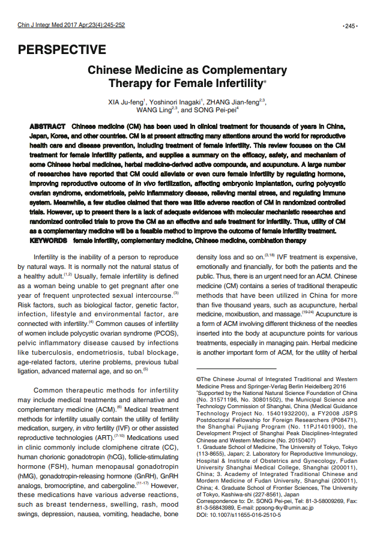

처치 이후의 경과와 회복을 함께 확인합니다.
- 01처치와 진료 기록
- 02현재의 증상
- 03회복 상담
| 구분 | 살펴볼 점 | 알려주실 내용 |
|---|---|---|
| 현재 상태 | 출혈·통증·발열과 회복 경과 | 산부인과 진료 결과와 처치 내용 |
| 진료 이력 | 이전 임신과 유산 경험 | 검사 결과와 복용 중인 약 |
| 회복 계획 | 휴식·일상 복귀와 다음 상담 | 생활에서 필요한 도움과 궁금한 점 |
궁금한 항목을 펼쳐보세요.
필요한 설명과 자료를 주제별로 확인할 수 있습니다.
01계류 유산과 수술 후 치료＋
계류 유산과 수술 후 치료
유산은 질병이 아닙니다만 일단 임신상태가 된 여성의 몸은 크게 변화합니다.
02I 임신중절 수술 후 치료＋
피치 못한 유산 관련 수술을 받게 되는 경우에도 상당히 신경써서 관리해야합니다.
수술 후 합병증이 생기지 않기 위해서는 3-4주간 절대적 안정을 취하는 것이 중요합니다.
임신 중절 수술을 한 후 나타나는 주요 후유증은 다음과 같습니다.
I 임신중절 수술 후 치료
아셔만 신드롬 asherman's syndrom
아셔만 증후군이란 자궁내막소파술, 자궁경부 원추형 생검술 또는 전기소작술 등
수술 병력이 있는 환자, 골반 감염, IUD(자궁내피임기구)로 인한 만성 염증성 질환, 결핵 등 여러 종류의 감염으로 인해
자궁경관이 손상되고 자궁내막이 파괴되며 자궁강이 유착되면서
월경량이 감소하기도 하고 월경이 없어지기도 하는 일련의 증상이 생깁니다.
이중 임신 중절 수술 후라면 월경량감소(내막면적 감소), 자궁경부 유착(월경통, 골반통), 태아가 유착부위에 착상(유산, 조산, 전치태반 등), 불임등과 같은 증상, 합병증을 유발합니다.
예방을 위해서는 수술 시 내막에 상처가 적어야 하며, 가능한 초기에 수술을 하는 것이 좋으며, 수술 후 자궁내막의 유착을 방치하기 위해 한의학적 관리를 함께 받는 것이 좋습니다.
만성 골반염
유산이후 골반환경이 변경되어 가장 흔하게 볼 수 있는 인공유산의 후유증입니다.
자궁경부가 손상되면 균의 침입이 용이해지며, 다음 월경이 오기 전에 성관계를 하는 경우 주로 발생합니다.
성관계 재개와 피임·다음 임신 계획은 출혈과 회복 상태를 확인한 뒤 담당 산부인과 의료진과 상의하세요.
그리고, 만성 골반내 감염을 예방하기 위해서 가급적 IUD(자궁내피임기구)는 사용하지 말아야 합니다.

I 한의학이 돕는 방법
1개월 이내에 | 유산 후 가급적 빠른시간 이내에 한약을 복용하는 것이 좋습니다. 대만에서 진행된 한 연구에 의하면 초기 1개월이내에 한약을 복용한 경우 그렇지 않은 경우에 비해 후유증의 빈도가 상대적으로 덜하며 위험성은 거의 없는 것으로 알려져있습니다. 저희는 산모가 유산이 된 사실을 알고난 후 수술 또는 처치 직후부터 어혈약은 바로 복용하는 것을 권해드리고 있습니다. 초기 한약은 활혈活血처방을 사용합니다. 보통 2-4주간 복용하게 됩니다. |
활혈活血 | 자연유산후, 인공유산 후 나타날 수 있는 후유증, 합병증에 대해서 한의학이 도와줄 수 있습니다. |
진료 전, 세 가지만 준비해 주세요.
증상의 기록
가장 불편한 점과 시작한 시점, 반복되는 상황을 알려주세요.
검사와 치료 이력
기존 검사 결과와 복용 중인 약을 함께 확인합니다.
꼭 묻고 싶은 질문
치료 목표와 생활관리 등 궁금했던 점을 편하게 이야기해 주세요.
이 안내는 건강에 대한 이해를 돕는 참고 정보입니다. 증상과 질환에 대한 정확한 판단은 의료진의 진료가 필요합니다.